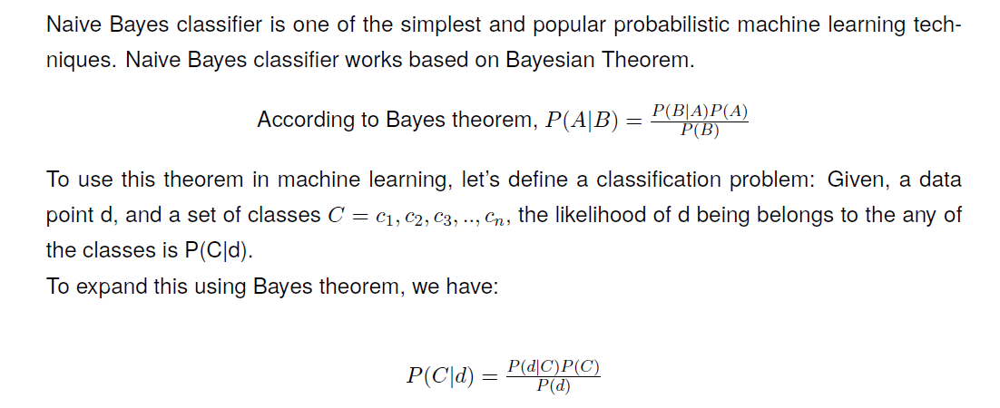
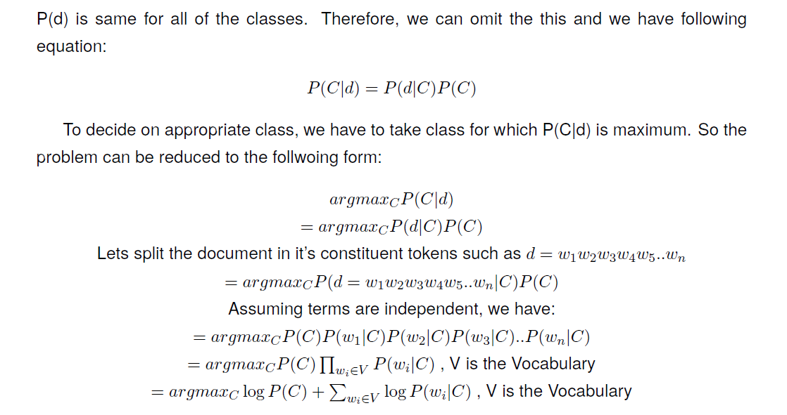
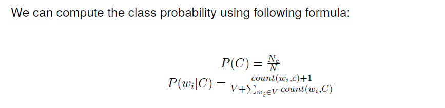
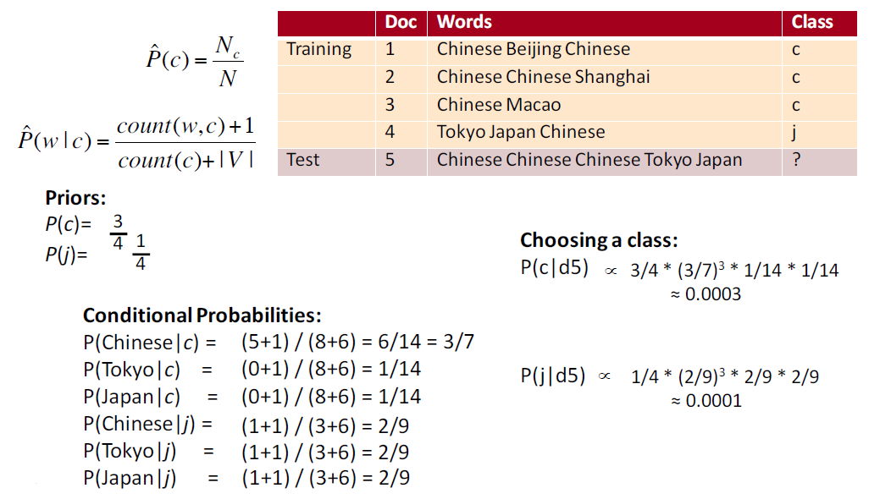

Multinomial_Naive_Bayes¶
  A worked example is given below
Here is the Training.csv link.
Be sure to store it in the same directory or edit the code according to your file path.
Here is the code implementation of Multinomial Naive Bayes:
import csv
import math
class Multinnomial_Naive_Bayes(object):
'''
Multinomial Naive Bayes Classifier.
chinese_data : list
For holding strings of chinese Class
japanese_data : list
For holding strings of Japanese Class
prior_prob_c : float
Calculated Prior Probability of Chinese Class
prior_prob_j : float
Calculated Prior Probability of Japanese Class
llh_c : dict
count of each word in Chinese Class is saved as {word: count(word)}
llh_j : dict
count of each word in Japanese Class is saved as {word: count(word)}
words_in_c: int
Total words in Chinese Class
words_in_j: int
Total words in Japanese Class
v_count: int
Number of different words
'''
def __init__(self):
self.chinese_data = []
self.japanese_data = []
self.prior_prob_c = 0
self.prior_prob_j = 0
self.llh_c = {}
self.llh_j = {}
self.words_in_c = 0
self.words_in_j = 0
self.v_count = 0
def Prior_Probability(self, filename):
'''
Estimates Prior Probability of each class
filename :
csv file of Training Dataset
return : self
'''
cCount = 0
jCount = 0
with open(filename) as docs:
doc = csv.reader(docs, delimiter=',')
for row in doc:
if row[1] == 'c':
self.chinese_data.append(row[0])
cCount += 1
else:
self.japanese_data.append(row[0])
jCount += 1
self.prior_prob_c = cCount/(cCount+jCount)
self.prior_prob_j = jCount/(cCount+jCount)
def likelihood(self):
'''
Estimates Likelihood of each word of each class
return: self
'''
for row in self.chinese_data:
for word in row.split():
if word in self.llh_c:
self.llh_c[word] += 1
else:
self.llh_c.update({word:1})
self.v_count += 1
self.words_in_c += 1
for row in self.japanese_data:
for word in row.split():
if word in self.llh_j:
self.llh_j[word] += 1
else:
self.llh_j.update({word: 1})
if word not in self.llh_c:
self.v_count += 1
self.words_in_j += 1
def fit(self, filename):
'''
Calls Prior_Probability and likelihood function
filename :
csv file of Training Dataset
return : self
'''
self.Prior_Probability(filename)
self.likelihood()
def predict(self, str):
'''
After getting the string it predicts the value and classifies it according to
majority rule.
str : string
Contains test string for prediction
return: string
returns which class the test string belongs
'''
prb_in_c = 0
prb_in_j = 0
for word in str.split():
if word in self.llh_c and word in self.llh_j:
prb_in_c += math.log10((self.llh_c[word] + 1)/ (self.words_in_c + self.v_count))
prb_in_j += math.log10((self.llh_j[word] + 1)/ (self.words_in_j + self.v_count))
elif word in self.llh_c and word not in self.llh_j:
prb_in_c += math.log10((self.llh_c[word] + 1) / (self.words_in_c + self.v_count))
prb_in_j += math.log10(1 / (self.words_in_j + self.v_count))
elif word not in self.llh_c and word in self.llh_j:
prb_in_c += math.log10(1 / (self.words_in_c+self.v_count))
prb_in_j += math.log10((self.llh_j[word] + 1)/ (self.words_in_j + self.v_count))
else:
prb_in_c += math.log10( 1 / (self.words_in_c + self.v_count))
prb_in_j += math.log10( 1 / (self.words_in_j + self.v_count))
prb_in_c += math.log10(self.prior_prob_c)
prb_in_j += math.log10(self.prior_prob_j)
if prb_in_c > prb_in_j:
return "Class: Chinese"
else:
return "Class: Japanese"
if __name__ == '__main__':
nb = Multinnomial_Naive_Bayes()
nb.fit('Training.csv')
print(nb.predict("Chinese Chinese Chinese Tokyo Japan"))
-
class
Multinomial_Naive_Bayes.Multinnomial_Naive_Bayes¶ Bases:
objectMultinomial Naive Bayes Classifier.
- chinese_data : list
- For holding strings of chinese Class
- japanese_data : list
- For holding strings of Japanese Class
- prior_prob_c : float
- Calculated Prior Probability of Chinese Class
- prior_prob_j : float
- Calculated Prior Probability of Japanese Class
- llh_c : dict
- count of each word in Chinese Class is saved as {word: count(word)}
- llh_j : dict
- count of each word in Japanese Class is saved as {word: count(word)}
- words_in_c: int
- Total words in Chinese Class
- words_in_j: int
- Total words in Japanese Class
- v_count: int
- Number of different words
-
Prior_Probability(filename)¶ Estimates Prior Probability of each class
- filename :
- csv file of Training Dataset
return : self
-
fit(filename)¶ Calls Prior_Probability and likelihood function
- filename :
- csv file of Training Dataset
return : self
-
likelihood()¶ Estimates Likelihood of each word of each class
return: self
-
predict(str)¶ After getting the string it predicts the value and classifies it according to majority rule.
- str : string
- Contains test string for prediction
- return: string
- returns which class the test string belongs